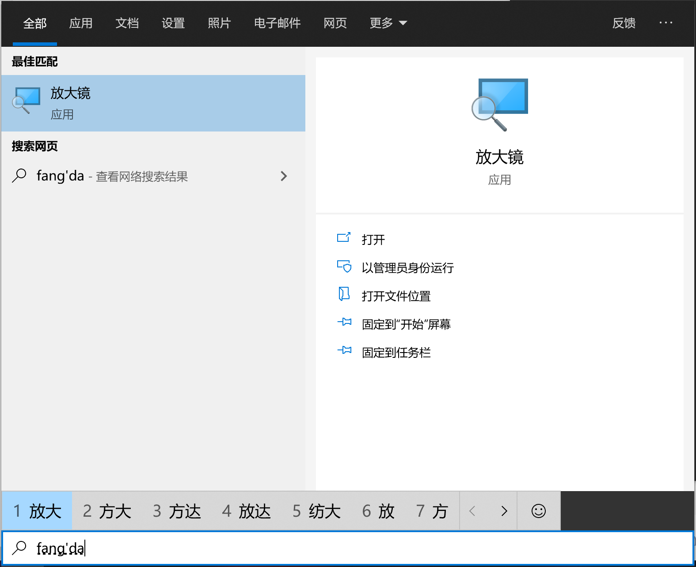
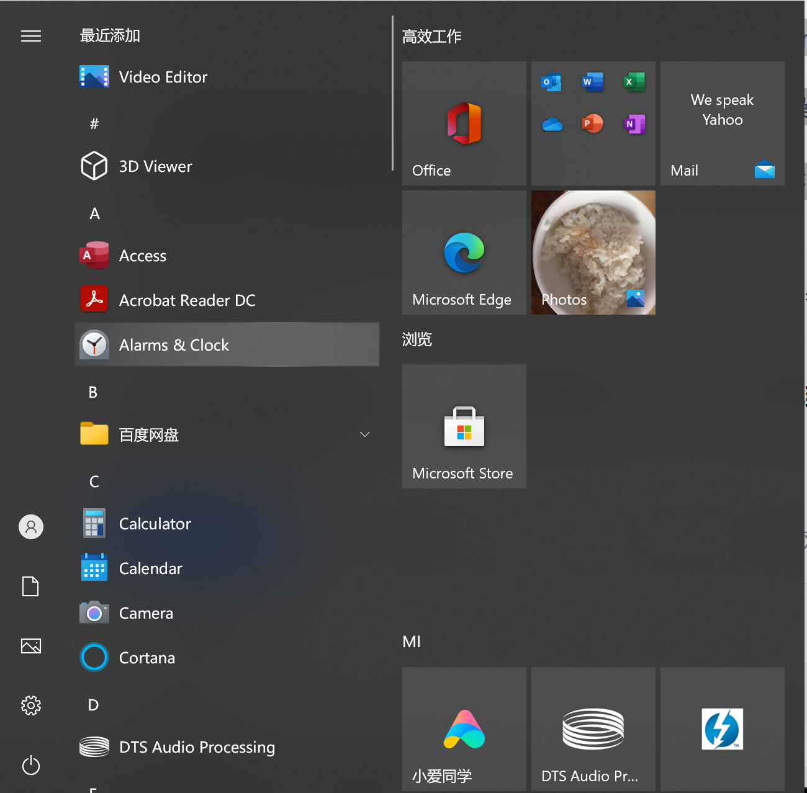
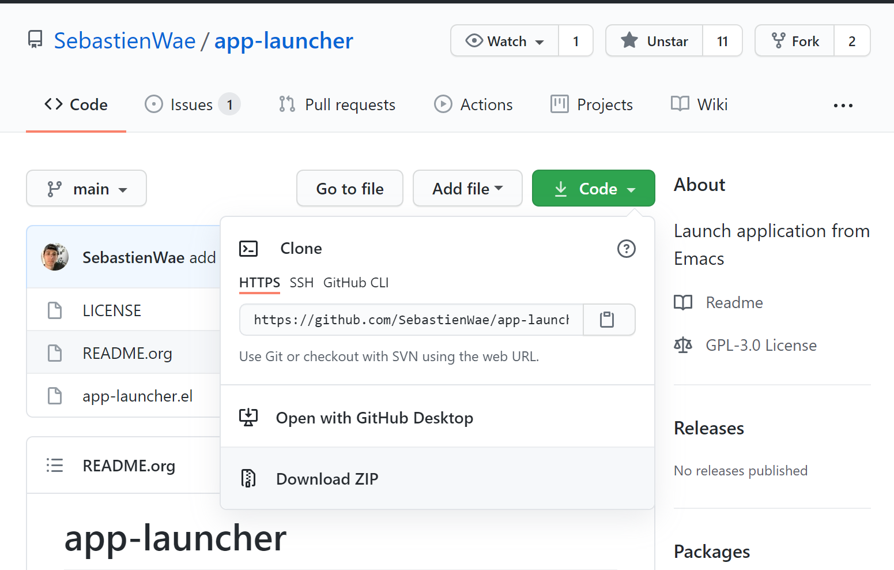
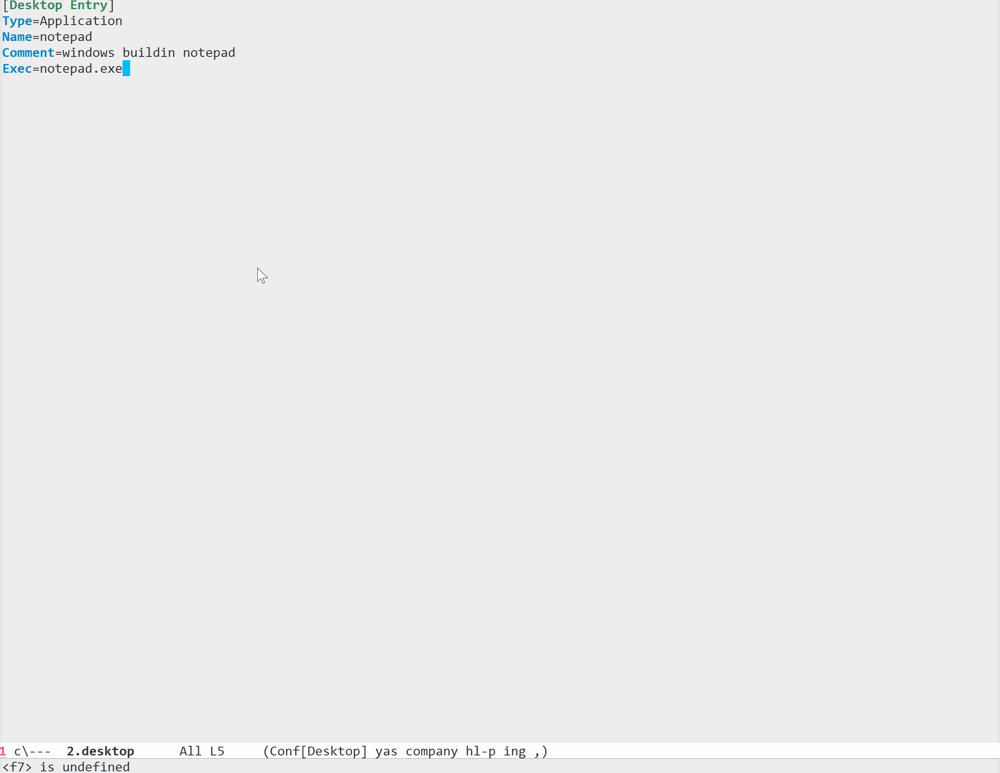
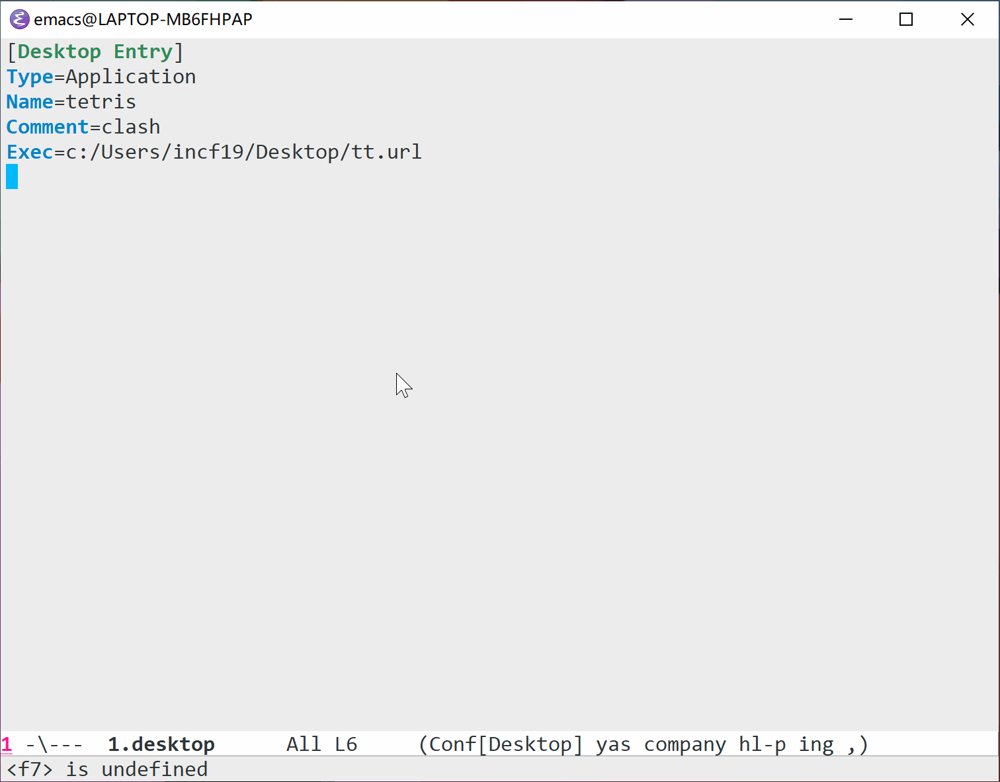
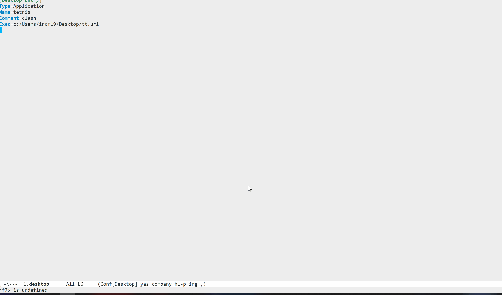

使用emacs作为app启动器
Table of Contents
囿于原先笔记本的孱弱性能和可怜的硬盘大小，借暑假的机会我弄了台 Redmibook Pro 15，虽说只有核显，但 i5-11300h 相对于 i5-7360u 还是有不小的提升，5000 块带来的16g 内存和 512g 固态在我看来还是挺香的。
上面这段话看起来有点打广告的嫌疑，不过换电脑带来的一些问题正是我折腾 emacs 的动力来源。电脑的更换必然会导致老电脑上软件的卸载和新电脑上软件的安装，在这个过程中我发现我在老电脑上安装的很多软件居然几乎没怎么用过，这并不是平时用不到，而是我根本就把它们遗忘了，在想要解决某个问题时直接就去使用其他解决方案（比如我下载过俄罗斯方块，但是玩的时候还是去网页里面玩）。如果把这些应用放在显眼的地方也许会更加利于使用。鉴于 emacs 强大的可扩展性，使用它来作为应用启动的管理器也许是个不错的选择。
本文主要是对 app-launcher 这个 emacs 插件的介绍，以及一些关于桌面效率的讨论。
由于我常用的系统是 Windows，以下演示均在 emacs on windows 27.2 下进行。app-launcher 这个插件是跨平台的，linux 下应该也能很好的使用。
1 桌面的效率问题
事先声明：我对于怎么打开应用和如何使用桌面并没有偏见，下面的文字仅代表我认为有一定道理的观点，如果您不认同，那就是我的问题。
一般来说，在 Windows 上安装完某个软件后，软件会自动在桌面添加一个快捷方式，通过双击它或者右键选择”打开“就可以运行该应用了。但是，应用的打开方式放在桌面上就会有一个问题，那就是如果你正在使用其他应用又想要打开新应用的话，你就必须先回到桌面才能打开。知乎用户 pansz 在他的一个回答【1】中这样写到：
很简单：因为将软件图标放在桌面上，并没有效率。
要启动桌面上的软件图标，你需要将所有程序最小化，然后再找到图标，再双击，然后再恢复所有程序的最小化，然后再切换回刚启动的应用，这其实是非常没有效率的方式，总共操作数量为5。
如果不使用桌面快捷方式的话，还可以考虑将应用固定在任务栏上，在需要时直接点开即可，我一般把截图工具和放大镜固定到任务栏上，因为它们实在是太常用了。但是任务栏允许固定的应用数量有限，太多了就不好看了。
更好的方式是使用开始菜单中的图标和使用搜索功能。【1】中是这样描述的：
更有效率的方式至少有两种（所用系统均为最佳Linux桌面发行版Windows10）：
- 直接左下角点出菜单，然后直接点击开始菜单中的对应图标，总操作数量为2。（所以将图标固定到开始屏幕才是更有效率的启动方式）
- 直接单按Win键呼出菜单，直接键盘输入关键字，想要的应用程序出来了，然后回车进入，总按键数量为3。（这里输入拼音也是可以的）。
样一来就没有必要回到桌面，可以直接在当前应用作为背景下打开新应用了。比如这样：

还有这样：

但是，使用搜索的话会有一些问题，它搜不到一些便携应用（portable app，指直接解压就可以使用的应用），因为应用没有使用安装文件安装到电脑中。开始菜单里面也只能显示“安装”过的应用。对我而言这就带来了一些问题，相比于安装我更喜欢免安装应用，它们管理起来更加方便。Windows 10 好像还提供了一个叫做“磁贴”的功能，不过我从 Windows XP 就开始使用 Windows 了，好像没有这个习惯（汗）。（听说 Windows 11 中这个东西又不见了）
关于桌面的讨论，更多的回答可以参考这两个知乎上的问题：
至少对我来说，不管是开始菜单还是搜索框都没有满足我的需求（不就是懒得学新东西吗），我想要的是可以快速查找并启动应用的 app 启动器。下面让我们用 emacs 来试试看。
2 app-launcher 拓展
使用 use emacs as app launcher 来作为搜索关键词并 google 就可以看到这个 emacs 包【2】了。顺带还可以看到两篇与此有关的文章，但是它们主要是在 Linux 上使用 emacs，某些操作可能并不适用于 Windows，所以只能作为参考。
- Launching applications from Emacs (lchsk.com)
- Emacs as a fuzzy launcher and Alfred-replacement (mattduck.com)
打开【2】的主页面就可以看到 elisp 源代码文件了。整个文件只有 200 行不到，代码读起来比较轻松且容易理解作者意图。这一节下面会分为两个小节，一节介绍代码的实现，另一节介绍插件的安装和使用。
2.1 app-launcher 的实现
在正式开始前，我们首先介绍一下 xdg 是个什么东西，以下内容参考自【3】。这里要感谢强大的 arch 文档。
XDG 桌面配置规范（XDG Desktop Entry specification）为应用程序和桌面环境的整合提供了一个标准方法，只要桌面环境遵守规则，应用程序图标就可以显示在系统菜单中。
配置项就是一个以 .desktop 结尾的文件，它和 Windows 的 ink 快捷方式文件很像。配置项大概分成三类：
- 文件后缀是 .desktop，文件中的文本包含启动方式，XDG MIME Application 使用的 Mimetype等。将它放到特定位置可以自动启动程序
- 文件后缀是 .desktop，定义指向某个 URL 的链接
- 文件后缀是 .directory，定义应用程序菜单中的子菜单
系统程序的配置项通常位于 /usr/share/applications 或 /usr/local/share/applications 目录，单用户安装的程序位于 ~/.local/share/applications 目录，桌面环境会优先使用用户的配置项。
也就是说，在 linux 中，按照规则编写了 .desktop 文件并放入某个特定文件夹中的话，就可以在菜单中显示文件中描述的应用了。关于 xdg 的标准介绍就到这里，可以在【3】中了解更多信息。.desktop 文件的编写我会在下一小节中介绍。以下就是对 app-launcher.el 文件中各个变量和函数的逐个分析过程了，觉得没意思可以不看。
app-launcher-apps-directories这个变量保存了含有 .desktop 文件的目录。默认条件下就是上面关于 xdg 介绍的那三个目录，在 Windows 下和usr相关的目录是无效的，不过也不用改app-launcher--annotation-function是用于 minibuffer 提示信息的函数app-launcher--action-function是根据信息来运行应用的函数app-launcher--cache，app-launcher--cache-timestamp和app-launcher--cached-files，第一个负责存储 .desktop 中的数据，第二个记录时间戳，第三个存储现有的文件名。app-launcher-list-desktop-files函数列出所有在指定目录下的 .desktop 文件，并给出它们的绝对路径。它是以关联表的形式给出的app-launcher-parse-files函数对 .desktop 文件进行解析，获取其中的 Exec，Comment 属性值存储到哈希表中，并返回哈希表app-launcher-list-apps，这个函数是上面两个函数的包装，它将获取的信息存储到app-launcher--cache中，并更新app-launcher-cache-timestamp和app-launcher--cached-files。它会检查时间戳和是否有新文件，来判断是否更新- 接下来是
app-launcher--annotation-function-default和app-launcher--action-function-default它们是列表中第二个和第三个函数的默认值 app-launcher-run-app就是接口函数，通过调用它可以弹出 minibuffer 供你选择 app 并执行。每运行一次该函数就会调用一次app-launcher-list-apps，以此来对 .desktop 文件进行刷新
这个实现在我看来还是很精巧的，简单几行代码就实现了缓存和更新。
2.2 app-launcher 的使用
这一节就是 app-launcher 使用的全流程教学，我把我的使用方法记录在这里，希望对你有所帮助。
2.2.1 下载和”安装“ app-launcher
第一步自然是下载了，下载的话可以有很多方法，最简单的是：
git clone https://github.com/SebastienWae/app-launcher
或者是点击 github 页面的下载：

选择 Download Zip 然后解压即可。
下载完成后就可以开始安装了，所谓安装就是把 app-launcher.el 所在的位置放到 emacs 的 load-path 中，这样就可以通过 load 或者 require 进行加载。
(add-to-list 'load-path "/path/to/app-launcher.el")
2.2.2 配置 app-launcher
通过源代码可知， app-launcher-run-app 是一个被标记为 autoload 的函数，也就是说你可以使用 autoload 来将其动态加载，不过不动态加载也没问题就是了。这里我将它绑定到 C-c y 上并写入 init.el 文件中：
(require 'app-launcher) (global-set-key (kbd "C-c y") 'app-launcher-run-app)
接着重启 emacs，这个键绑定就存在于 emacs 中了。
2.2.3 编写 .desktop 文件
上面我已经说到，xdg 的默认目录是 ~/.local/share/applications （Windows 下另外两个没用），也就是说你要把你的 .desktop 文件全都放在该目录下。Windows 中用户目录就是 HOME 目录（不过我一般习惯自己加 HOME 环境变量），在用户目录下创建 .local/share/application 即可。（也可以修改 app-launcher-apps-directories 的值让它更简单一点）
接下来就可以编写一些 .desktop 文件了，这里我们使用 Widnows 自带的 notepad 来作为例子，因为它可以直接命令行运行，所以不需要路径之类的东西，非常方便。
由于 app-launcher 只能识别 Exec ， Comment 选项，所以 .desktop 文件没必要写上很多东西，写成这样就行了：
[Desktop Entry] Type=Application Name=notepad Comment=windows buildin notepad Exec=notepad.exe
随便给它一个名字，比如 2.desktop ，然后丢到目录里面就行了，我们看看它是如何在 emacs 中启动的：

对于不能直接在 cmd 中运行的程序，你就需要在 Exec 项中指明程序的绝对路径。
我大概添加了 20 个程序到 20 个 .desktop 文件中，下面是总体的效果：

你可能会注意到，这一张 gif 的配置文件 1.desktop 中，Exec 指向了一个 .url 快捷方式文件，这也是可以打开的，请看：

这里的俄罗斯方块链接为：俄罗斯方块 (chvin.github.io)
也就是说，通过 app-launcher，我可以实现安装应用，便携应用以及网站等等东西的快速打开，emacs 提供的补全功能非常强大，通过输入几个字符就可以定位想要的文件。
3 后记
app-launcher 只提供了运行方法，没有提供修改 .desktop 文件的函数或命令，如果要对这个包进行一定的拓展的话可以考虑使用 minbuffer 提供简单的增删查改。
我的需求主要来自两个方面，其一是能够充分利用电脑上的软件，其二是能够快速查找到所需要的软件，就个人来看，这两个需求是得到了满足的。
前文我提到了俄罗斯方块，这里就推荐一个俄罗斯方块小游戏吧，它与普通的俄罗斯方块的不同之处在于它有 物理引擎 。
文章最后来一张中国图，再不往下的话东方角色估计在这个专栏里面是没办法完全展示了：